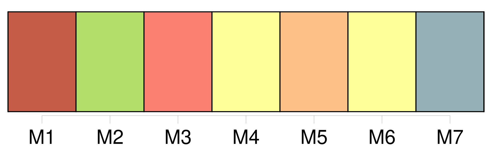
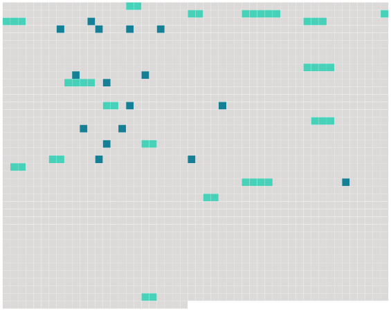

Longueur nb maillons : 31 mentions |
 |
La dame le prit par la main, et dit qu’ elle voulait le conduire vers [ses enfants] [1 phrases] Ils arrivèrent dans un jardin, où [deux enfants] à l’ air maussade, [un garçon et une fille] , à peu près du même âge que Christophe, semblaient se bouder [l’ un l’ autre] [1 phrases] [Ils] se rapprochèrent pour examiner le nouveau venu. [1 phrases] [Les deux autres] , immobiles à quelques pas, le regardaient des pieds à la tête, se [poussaient] du coude, et [ricanaient] Enfin, [ils] se décidèrent. [Ils] lui demandèrent qui il était, d’ où il venait, et ce que faisait son père. [14 phrases] Mais [les deux autres petits] , que d’ ailleurs la nouvelle intéressa, ne parurent pas l’ en considérer davantage. [Ils] prirent au contraire un ton de protection. [Ils] lui demandèrent ce qu’ il ferait plus tard, s’ il serait aussi cuisinier ou cocher. [2 phrases] Enhardis par son silence, [les deux petits riches] , [qui] avaient pris brusquement pour le petit pauvre une de ces antipathies d’ enfant, cruelles et sans raison, cherchèrent quelque moyen amusant de le tourmenter. [7 phrases] Cela ne satisfit point [ses bourreaux] , [qui] décidèrent que la barrière n’ était pas assez haute ; et [ils] y ajoutèrent d’ autres constructions, jusqu’ à ce qu’ elle devînt un casse-cou. [5 phrases] Il était malade de honte ; il entendait [les deux enfants] danser de joie autour de lui ; il souffrait d’ une façon atroce. Il sentait qu’ [ils] le méprisaient, qu’ [ils] le haïssaient …… [5 phrases] Il essaya de nouveau ; [ils] se jetèrent sur lui [tous deux] , s’ asseyant sur son dos, lui appuyant la figure contre terre. [3 phrases]
Il s’ arc-bouta sur ses genoux et ses mains, se secoua comme un chien, fit rouler [ses persécuteurs] ; et, comme [ils] revenaient à la charge, il fonça la tête baissée sur [eux] , gifla la petite fille, et jeta d’ un coup de poing le garçon au milieu d’ une plate-bande. [1 phrases] [Les enfants] se sauvèrent à la maison, avec des cris aigus. [10 phrases] [Ses deux petits ennemis] étaient revenus pour assister à sa honte, et [piaillaient] à tue-tête. [3 phrases] Elle le secoua plus fort et le traîna par la main vers la dame et [les enfants] , pour qu’ il se mît à genoux. [32 phrases] Tous ses malheurs de la journée l’ accablaient à la fois : tout ce qu’ il avait souffert, l’ injustice [des enfants] , l’ injustice de la dame, l’ injustice de ses parents, et – ce qu’ il sentait aussi, comme une blessure vive, sans s’ en rendre compte, – l’ abaissement de ses parents, dont il était si fier, devant ces autres gens, méchants et méprisables. |
 |
Il est possible de télécharger la ressource sur la page Ortolang |
Si vous avez des questions ou vous voyez des erreurs, merci d'envoyer un mail à silvia.federzoni89@gmail.com |